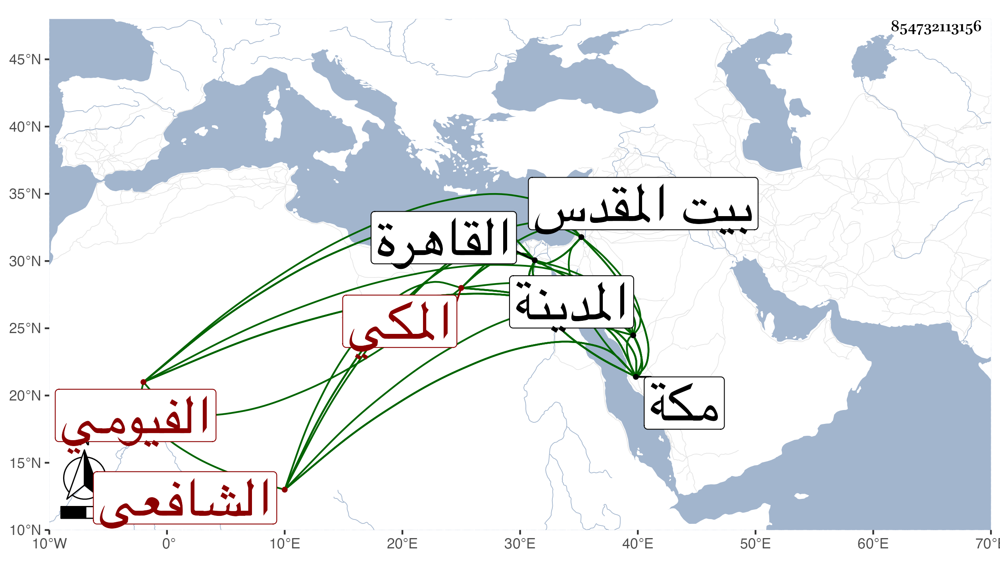

0902Sakhawi.DawLamic.ITO20230111-ara1.EIS1600.854732113156
Biography ID: 854732113156
664
محمد بن عمر بن عبد العزيز بن العماد أحمد بن محمد بن عبد الوهاب بن أسد أبو عبد الله حفيد العز الماضي الفيومي الأصل المكي نزيل القاهرة الشافعي ممن نشأ بمكة واشتغل قليلا وقدم القاهرة في سنة اثنتين وتسعين فحضر عند الزين زكريا وغيره قليلا بل وحضر عندي بمكة قبل ذلك دروسا بالمدينة النبوية دراية ورواية وكتب بخطه القاموس وأشياء ، ثم لما قدمت القاهرة في سنة خمس وتسعين قرأ علي من الجواهر جملة وسمع مني وعلي وسافر لبيت المقدس وغيره وهو ذكي غير متصون ممن تولع بالنظم وكثر محفوظه فيه وزاد ذكاؤه وهجا الأماثل وأهين من جهة خدم أبي المكارم بن ظهيرة وأبيه بسبب هجائه أبا المكارم بحيث كان ذلك سبب خروجه من مكة ثم عاد إليها مع الشامي في موسم سنة ثمان وتسعين ورجع في أثناء التي بعدها بحرا وذكرت عنه قبائح والولد سر أبيه .
